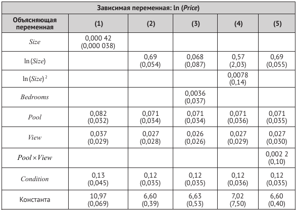
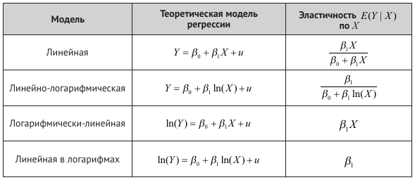

Производственная функция Кобба–Дугласа устанавливает связь между выпуском (\(Q\)) и факторами производства: капиталом (\(K\)), трудом (\(L\)) и сырьем (\(M\)) и компонентой ошибок \(u\), используя соотношение \(Q = \lambda K^{\beta_1} L^{\beta_2} M^{\beta_3} e^u\), где \(\lambda\), \(\beta_1\), \(\beta_2\), \(\beta_3\) являются параметрами производственной функции. Предположим, что у вас есть данные по выпуску и факторам производства из случайной выборки фирм с одинаковой производственной функцией Кобба—Дугласа. Как бы вы использовали регрессионный анализ для оценки параметров этой производственной функции?
Предположим, что в вопросе 8.2 вы думали, что значение \(\beta_2\) не является постоянным, а возрастает при росте \(K\). Как вы могли бы использовать компоненту взаимодействия, чтобы учесть этот эффект?
Стандартная функция “спроса на деньги”, которая используется макроэкономистами, имеет форму \(ln(m) = \beta_0 + \beta_1 ln(GDP) + \beta_2 R\), где \(m\) — (реаль ная) денежная масса, \(GDP\) — значение (реального) валового внутреннего продукта и \(R\) — значение номинальной процентной ставки, измеренной в процентах за год. Предположим, что \(\beta_1 = 1.0\) и \(\beta_2 = −0.02\). Что случится со значением \(m\), если \(GDP\) увеличится на 2 %? Что случится с \(m\), если процентная ставка увеличится с 4 до 5 %?
Предположим, что исследователь собирает данные о домах, которые продаются в определенном районе за прошедший год, и получает оценки регрессий, представленные в таблице ниже.
Определения переменных:
Price = цена продажи (долл.);
Size = площадь дома (в квадратных футах);
Bedrooms = число спален;
Pool = бинарная переменная (1 — если дом имеет бассейн, 0 — в противном случае);
View = бинарная переменная (1 — если у дома прекрасный вид, 0 — в противном случае);
Condition = бинарная переменная (1 — если агент по недвижимости сообщает об отличном состоянии дома, 0 — в противном случае).

Задания:
а) Используя результаты из столбца (1), определите ожидаемое изменение цены дома, если его площадь увеличится на 500 квадратных футов. Постройте 95 %-й доверительный интервал для процентного изменения стоимости дома.
б) Сравнивая столбцы (1) и (2), скажите, какую переменную лучше использовать для объяснения стоимости домов: \(Size\) или \(\ln(Size)\)?
в) Используя столбец (2), выясните, чему равен оцененный эффект влияния наличия бассейна в доме на его цену? (Убедитесь, что единицы измерения корректны.) Постройте 95 %-й доверительный интервал для этого эффекта.
г) В регрессию из столбца (3) добавлена переменная, характеризующая число спален в доме. Насколько велик оцененный эффект от наличия дополнительной спальни? Является ли этот эффект статистически значимым? Почему, как вы думаете, оцененный эффект так мал? (Подсказка: какие другие переменные остаются постоянными?)
д) Важна ли квадратичная компонента \(ln(Size)^2\)?
е) Используйте регрессию из столбца (5) для вычисления ожидаемого изменения в цене при наличии бассейна в доме без красивого вида. Является ли различие большим? Является ли различие статистически значимым?
Рассмотрим модель регрессии \(Y_i = \beta_0 + \beta_1 X_{1i} + \beta_2 X_{2i} + \beta_3 ( X_{1i} \times X_{2i}) + u_i\).
Проинтерпретируйте коэффициент \(\beta_3\). Какую роль он выполняет в модели?
Покажите, что:
\(\Delta Y / \Delta X_1 = \beta_1 + \beta_3 X_2\) (эффект от изменения \(X_1\) при постоянной \(X_2\)).
\(\Delta Y / \Delta X_2 = \beta_2 + \beta_3 X_1\) (эффект от изменения \(X_2\) при постоянной \(X_1\)).
Получите выражение для эластичностей, приведенных в приложении 8.2 (см. таблицу ниже), для линейной и линейной в логарифмах моделей. (Подсказка: для линейной в логарифмах модели предположите, что \(u\) и \(X\) независимы, как сделано в приложении 8.2 для логарифмически-линейной модели.)

На этом семинаре мы продолжаем разбирать пример, в котором мы изучали ценовую дискриминацию на рынке фастфуда по расе и доходу.
Вспомните и обсудите, как вы исследовали эту проблему на одном из предыдущих семинаров.
На этом семинаре мы продолжаем работать с набром данных “discrim”, который можно загрузить из пакета wooldridge.
Как вы должны помнить, эти данные требуют определенной предварительной обработки, поэтому мы рекомендуем использовать в качестве скрипты, которые вы составляли на предыдущих семинарах. Также напоминаем, что для части задания был доступен разбор кода.
На этом семинаре мы возьмем за основу такой вариант модели:
\[ \begin{aligned} psoda_i = \beta_0 + \beta_1 prpblck_i + \beta_2 income_i + \beta_3 prppov_i + \\ \beta_4 wagest_i + \beta_5 emp_i + \beta_6 crmrte_i + \beta_7 hseval_i + \\ \beta_8 compown_i + \beta_9 prpncar_i + \beta_{10} nstores_i + u_i, \dots \end{aligned} \]
Обсудите, является ли линейная форма регрессии достаточно адекватной для данной модели. Какие альтернативные функциональные формы можно предложить? Как можно обосновать выбор той или иной формы?
При необходимости проведите предварительные преобразования и создайте новые переменные.
Оцените “линейную-линейную” модель. Обсудите результаты.
Оцените модель, введя в нее натуральные логарифмы для тех переменных, для которых такое преобразование разумно. Обсудите результаты.
Добавьте в модель произведение переменной prpblck с
переменной compown. Обсудите смысл включения данной
переменной в модель. Оцените модель, добавив в формулу выражение
I(prpblck * compown) (альтернативой может быть выражение
prpblck:compown).
Добавьте в модель квадрат переменной prpblck.
Обсудите смысл включения данной переменной в модель. Оцените модель,
добавив в формулу выражение + I(prpblck^2).
Для последней модели оцените предельный доли афроамериканцев в
населении района на логарифм цены при различных уровнях этой переменной,
зафиксировав значения остальных регрессоров на среднем уровне (для этого
рекомендуется использовать функции margins() и
margins_summary() из пакета margins).
Рассчитайте доверительный интервал для этого предельного эффекта.
Постройте график предельного эффекта с доверительным интервалом.
Проинтерпретируйте полученные результаты.